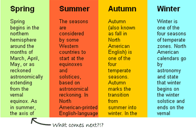

Update: I’ve created an advanced version of this technique that works in IE6! Read more here.
The Accordion Effect is fast becoming one of the most commonly used (and perhaps abused?) effects of the Web 2.0 world. Most JavaScript frameworks make such an effect fairly easy to pull off – heck, MooTools even built their reputation on it in the early days. So what makes this accordion effect special? It doesn’t require a single line of JavaScript.
First off, what is an “accordion” effect? Generally speaking, the accordion effect takes several larger elements and then compresses them into a small space so that only a small portion (like a heading) of most or all of the elements is visible. Then, when the user interacts with that element — either by clicking on it or maybe only mousing over — the accordion expands so that the element of interest is visible, and the other elements shrink down automatically. When it’s in use, it looks a bit like an accordion expanding and contracting: hence the name.
Our accordion will work exactly the same way: all of the elements will be partially visible when the user loads the page. And then when they mouse over a particular section, it will instantly expand – and the other elements will contract – to make reading more easy.

So how do we accomplish this trick? First, we start with our XHTML, which just consists of a couple of divs with some IDs applied:
<div id="accordion">
<div id="part1">
<p>This text is in part 1.</p>
</div>
<div id="part2">
<p>This text is in part 2.</p>
</div>
<div id="part3">
<p>This text is in part 3.</p>
</div>
<div id="part4">
<p>This text is in part 4.</p>
</div>
</div>
My first div defines where my accordion starts and ends. The divs nested inside are just parts of my accordion – they don’t even technically need IDs unless I want to style them differently. That’s all the XHTML it takes!
So now, let’s start building our accordion. We start by defining the physical limitations of our space:
#accordion {
width: 500px;
margin: 100px auto; }
All I’ve done is give my accordion a specific width and centered it in the page for a nice visual effect. Now, I have to create the default state for the divs inside of my accordion:
#accordion div {
float: left;
width:25%;
height: 300px;
overflow: hidden;}
This snippet floats all of my divs to the left and gives them a specific width and height. I’ve chosen a width of 25% because I have four elements in my accordion, so they all split that width up evenly by default. If I’d had five elements, I would have used 20%, and so on. My height of 300 pixels also becomes the height of my accordion div.
The overflow: hidden part here is also crucially important. This is what prevents my divs from either resizing to fit their content or spilling their content out of the containing div and onto our page. It also creates a nice visual effect… people will wonder what content they’re missing, and will mouse over the area to investigate.

So now that we’ve created our default state, we need to create our hover or “active” state. This requires two CSS rules. The first looks like this:
#accordion:hover div { width: 20px; }
We’re using the :hover pseudo-class here in a pretty creative way – we’re telling all of the divs inside of the div we’re hovering over to change. Specifically, we’re shrinking them all down to 20 pixels to make room for our expanded accordion section. So now we just need to make sure it expands:
#accordion:hover div:hover {
width: 440px;
overflow: auto; }
The :hover pseudo-class comes into play here again. Now, we’re applying styles to an element we’re hovering over, inside of an element we’re hovering over. We’re styling this element differently than our others by giving it a specific width – 440 pixels, i.e. 500 pixels minus the 20 pixels taken up by our other three divs – and setting its overflow to “auto.” These two classes cause our active div to expand, and then give it a scroll bar if the content is too long.
And that’s all there is to creating a CSS-only accordion box! If you’d like to see it in action, click here. The only change I’ve made to the full version is I’ve added a few background styles and some interior padding to each of the accordion sections to make them stand out and look a little more attractive.
This example creates a horizontal accordion box. But it’s just as easy to create a vertically oriented accordion. All we really need to do is eliminate the floats on our nested divs and turn most of our width tags into height tags. Here is the markup:
#accordion {
width: 500px;
height: 400px;
margin: 20% auto; }
#accordion div {
height:25%;
overflow: hidden;}
#accordion:hover div {
height: 20px; }
#accordion:hover div:hover {
height: 340px;
overflow: auto; }
And you can see it in action here.
As with any trick this cool, there are some caveats. Most significantly: this technique does not work in IE6, (update: now works in IE6! Read more here) because IE6 doesn’t support hover states on anything other than anchors. Therefore, you can make it work if you’re willing to make a sacrifice: if you wrap all of your divs in anchor tags, and then apply the hover state to those anchors instead of your divs, the technique should work the same (I haven’t tried it, though). However, that wouldn’t be particularly semantic or valid, so I’m not showing it here.
Also, if you apply any padding or borders to your #accordion div, that can cause some problems. The border and padding are part of your div, and therefore part of your :hover class. However, if you’re hovering over the containing div’s padding, you aren’t hovering over one of the sections of your accordion – meaning all of your interior divs will shrink down to their smallest size, and none will grow to fill the space. It took me half an hour of debugging to figure this one out. :)
So there you have it. Use it, share it, love it. And let me know in the comments if you come up with a particularly interesting or attractive implementation – mine is obviously pretty simple!
This would be interesting to see implemented in collapsed navigation in the secondary content area of the page (sidebar). Suppose you are using
uls for your nav, apply the height and overflow styles to their correspondinguland/orli.The main gripe I have about this accordion method, however, is that it proves inaccessible to users without a mouse, which happens more often that we care to admit. iPhone/iPod Touch users are incapacitated, and I know in my conference room the wireless mouse works just as often as it doesn’t and I’m usually relegated to keyboard control.
In a navigation setting, however, you could combat this problem with anchors around the nav section headings (which are semantic), coupled with
:activeand:focusstyles in addition to your hover styles.Altogether, pretty cool! This along with a Javascript accordion promises users a very similar experience whether or not JS is enabled.
Great comments, Jennifer. I’ll admit wholeheartedly that this sort of method isn’t appropriate for all uses. I mostly presented it as a proof-of-concept: you don’t need more than a dozen lines of CSS to create some pretty interesting interactive effects. I like the idea of trying the change to the :active and :focus pseudo-classes, too — I might have to give that a try!
Pingback: Skylog » Blog Archive » links for 2008-04-10
Pretty cool. However, doesn’t have that smooth effect like you get when using javascript. Very impressive!
It’s probably a nice way for a Javascript-powered accordian to degrade (assuming the mouse access issues were handled).
Like many people, I have ‘No Scripts’ enabled when I visit a site for the first time, and many sites never get a chance to get their JS privileges because they fail badly on first load.
This gives you basic site functionality without any JS needed.
Nice, but it doesn’t work in ie6; that reminds me suckerfish
Doesn’t seem to work properly in firefox3b5, when accordion is horizontal, and when you move from left to right, the last pane doesn’t flip open but instead all pane are collapsed and will reset to default if you leave the the accordian area
might be considered cheating, but you can get the :hover effect in ie6 to work with a little javascript:
http://lawrence.ecorp.net/inet/samples/css-ie-hover1.shtml
Pingback: Fatih Hayrioğlu’nun not defteri » 11 Nisan 2008 web’den seçme haberler
Pingback: CSS only Accordion Effect « Rif.webmemo
Pingback: Links of Interest - CSS-Tricks
Pingback: CSSのみでAccordionを実現 - N voice
Pingback: 30 Exceptional CSS Techniques and Examples | Six Revisions
exlente post, muchas gracias !!
Pingback: 30 Exceptional CSS Techniques and Examples - A Great Place for News, Articles & Free Web Resources
Pingback: Best Of April 2008 | Best of the Month | Smashing Magazine
This is pretty cool. I have something similar working on my site only it’s more of a vertical navigation for some quick misc. links. It’s a little tricky but I’m still working with it to get it to work better.
Justin
Pingback: Kantongin » Best Of April 2008
Pingback: KMC | Web & Internet Teknolojileri Günlüğü » CSS ile Hazırlanmış 30 Görsel Örnek
Thanks for your posting !
But it’s not work on IE6 !
———^_^——–
Thanks and best regard,
Pingback: Accordion | milo
Pingback: בלוגה של אמא » links for 2008-05-07
Pingback: Best Of April 2008 - Glimpses of the Aleph
Pingback: Div+Css页面特效代码30个
Nice realization.
But I have some troubles with MSIE.
Pingback: New to CSS? New to CSSnewbie? Start Here! - CSSnewbie
I happened upon this site while following the links from another site. Your site is wonderful and i bookmarked it. Thank your for the hard work you must have put in to create this wonderful facility. Keep up the excellent work
Pingback: AdobeDeveloperFace » 30 Exceptional CSS Techniques and Examples
Pingback: Pure CSS Accordion Menu | ProgTuts
Pingback: CSS techniques and examples List: Part 1 | Net Feast
Pingback: 30 Exceptional CSS Techniques and Examples « Jonsunhee’s Weblog
Pingback: 30 Exceptional CSS Techniques and Examples : NguyenVanChieu
Pingback: Colección Css (tutoriales): Layout, tables, forms, buttons… — WYDBLOG
Pingback: Webclave.com » Blog Archive » 30 Exceptional CSS Techniques and Examples by Sixrevisions
Pingback: CSS-Only Accordion « Yes We Did!
It’s really awesome i must have to try…
Pingback: 30 Exceptional CSS Techniques and Examples - Six Revisions | Secondary cortex: online
Pingback: 洋芋的博客 » 内容索引 » 精选30个优秀的CSS技术和实例(转载) - 洋芋的博客
Pingback: 精选30个优秀的CSS技术和实例at ThinkiP!
Pingback: intkids`blog » 资源盛宴：30个优秀CSS技术和实例（上）
Pingback: Advanced CSS Accordion Effect
Pingback: rascunho » Blog Archive » links for 2008-12-18
Pingback: Advanced CSS Accordion Effect | Castup
Pingback: The Year In Review: 2008
Pingback: Discover the “Cool” of CSS: 25 Advanced CSS Techniques | Desizn Tech
Pingback: 22 Most Amazing Css Tricks « Reeckon
Pingback: 「magazine-basic」途中経過 その２ | ブログで行こう！ WordPress なら最高！
Pingback: 25个CSS教程 - Booto’Blog
Pingback: 我想网 » Blog Archive » 30个非凡的CSS技巧和例子
Pingback: 克兰印象 » 25个高级CSS技巧教程